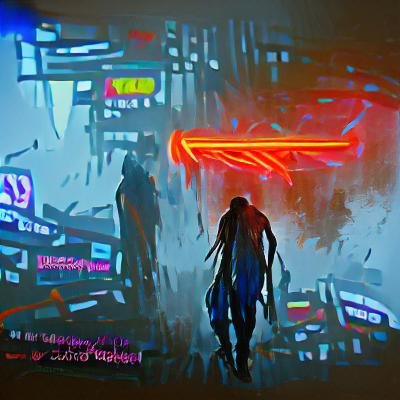

PART II: ideal self
• why do we get so defeated about how we fix our problems?
• what moves me beyond “changing the world?”
• how can i change my world?
• how do i activate myself in my community?
• how to stay physically active in your communities
• avoiding [DELETE AVOIDING — REWRITE “MANAGING”] burnout in capitalist systems
• codesigning equity
• is physical space the place?
• can you change from something that was already good?
• the process of discovering who you are after learning new information
• how to care for others
• important community-led structures
• speculative design
• buckminster fuller
• how can we communicate support?
• what would my life look like after 3 years of living in the bliss state?
• transition design
• black people in greece
• how can i create a new space with considerations for the environment?
• how to counter gentrification
• what would the world look like if we didn’t need safe spaces?
• what would a safe world look like?